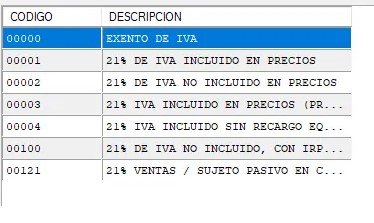

📦 Botón de Artículos
En este apartado encontrarás una ventana similar a la de Clientes y Proveedores, pero orientada a la gestión de productos.
➕ Crear un nuevo artículo
Si pulsas la tecla “+”, el sistema creará un nuevo artículo para que puedas comenzar a rellenar sus datos.

💰 Datos imprescindibles del artículo
Para que un artículo sea funcional en el MAIS, es obligatorio completar:
✔️ Precio de costo: Es el importe que nos cuesta a nosotros adquirir el artículo.
✔️ Tarifa de venta: Es el precio de venta al público. Puedes configurar varias tarifas, pero lo habitual es usar la Tarifa 1.
✔️ Tarifa de venta: Es el precio de venta al público. Puedes configurar varias tarifas, pero lo habitual es usar la Tarifa 1.
🛠️ Opciones adicionales del artículo
Puedes añadir información extra para una gestión más completa:
- ⭐ Descuento especial
- 🛡️ Garantía
- 🔧 Características específicas
- 🛡️ Garantía
- 🔧 Características específicas
⚠️ ¡Atención! Selección del tipo de IVA
Si presionas F2 sobre el campo de IVA, podrás ver todos los tipos disponibles.
Tipos de IVA y su efecto:
- IVA NO INCLUIDO EN PRECIOS ➜ A la tarifa de venta se le sumará el 21% correspondiente.
- IVA INCLUIDO EN PRECIOS ➜ La tarifa de venta ya incluye el IVA, por lo que no se añade nada.
🚫 Importante: No se puede facturar sin IVA. En caso de necesitar una exención, deberá comunicarse a MAIS para que ellos lo configuren correctamente.
SIEMPRE, SIEMPRE, SIEMPRE habrá que hacer inventario o stock de los artículos para que al hacer una venta no se descuenten productos que no tenemos.
SIEMPRE, SIEMPRE, SIEMPRE habrá que hacer inventario o stock de los artículos para que al hacer una venta no se descuenten productos que no tenemos.
🖼️ Imagen del artículo
Puedes asignar una imagen al artículo, lo que facilita su identificación en los listados.